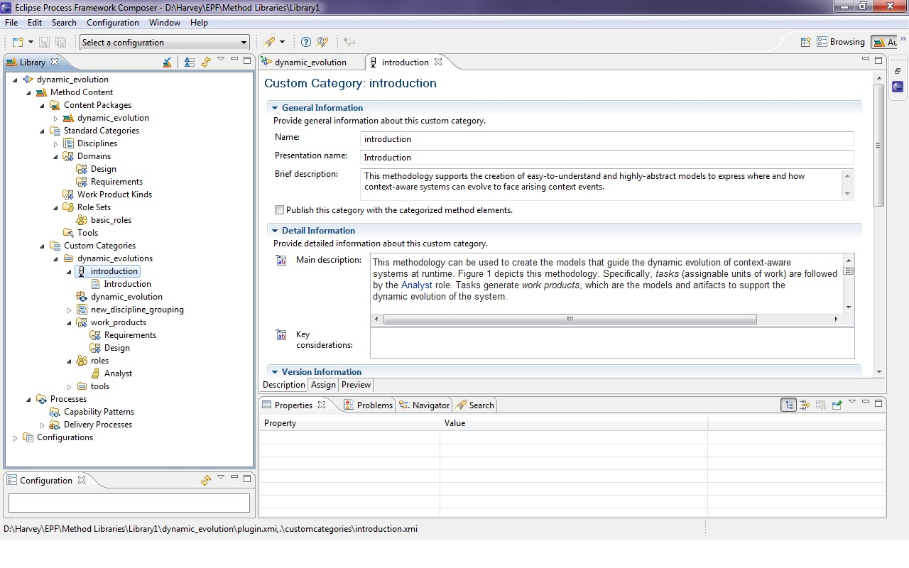

The steps to work with the plug-in that supports the methodology for the dynamic evolution of context-aware systems with models at runtime are the following:
1. Download the methodology plug-in (it is a .zip file).
2. Extract the .zip file.
3. Download and install the Eclipse Process Framework Project (EPF).
4. Run epf.exe. It will open the Eclipse Process Framework Composer.
5. Go to File/Open/Method Library and open the extracted plug-in. Please see the screeshot below:
